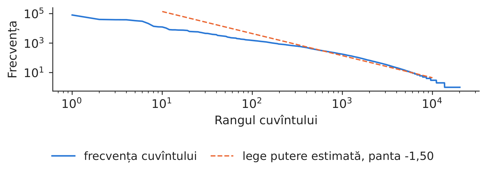
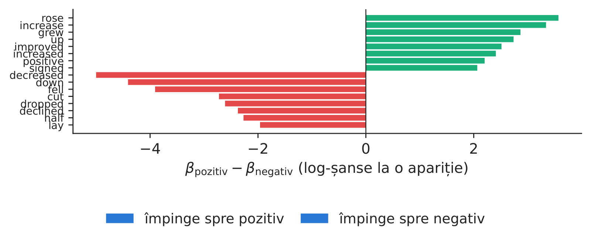
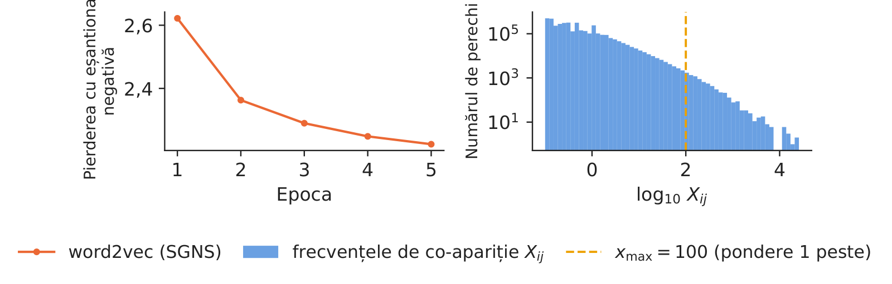
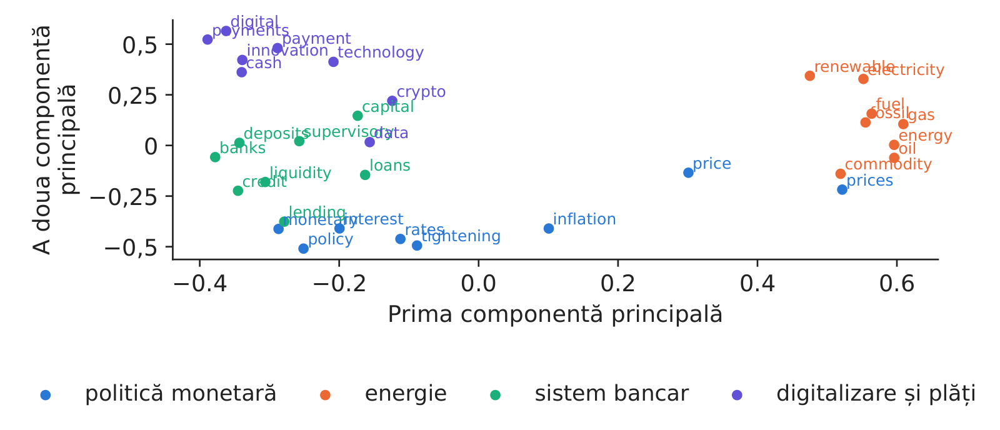
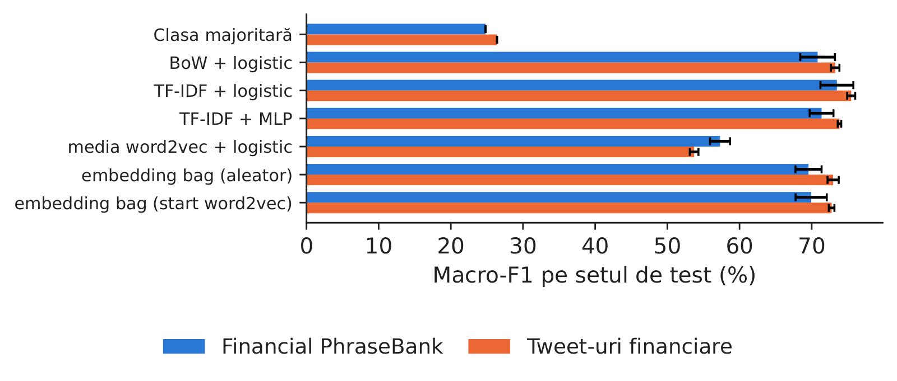
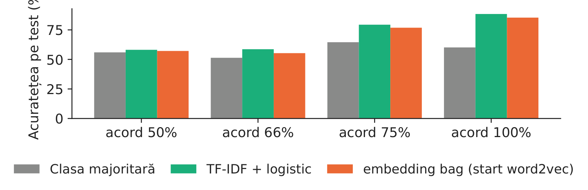
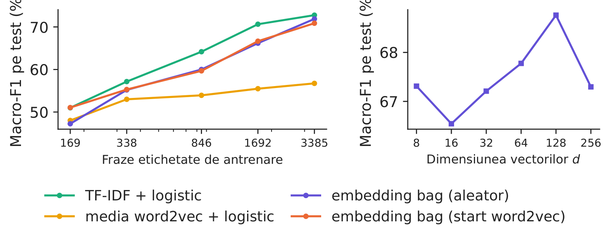
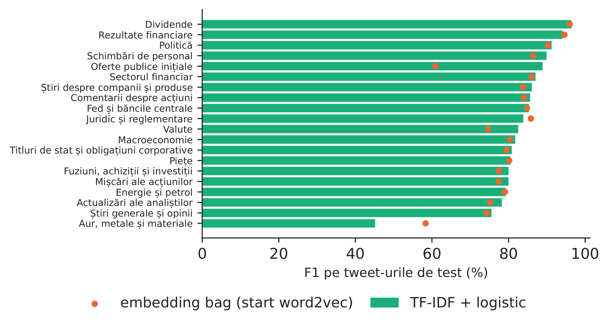

Cursul 6: Bazele NLP: reprezentarea textului și reprezentarea vectorială a cuvintelor
Cursul 6
Bazele NLP: reprezentarea textului și reprezentarea vectorială a cuvintelor
Prof. dr. Daniel Traian PELE
Academia de Studii Economice din București (ASE), Departamentul de Statistică și Econometrie Academia Română, Institutul de Prognoză Economică (IPE)
O mare parte din ceea ce mișcă piețele este scris: știri despre companii, tweet-uri, discursurile băncilor centrale, rapoartele analiștilor. Prelucrarea limbajului natural (NLP) transformă aceste texte în numere pe care un model le poate folosi. Cursul urmărește cele două mari familii de reprezentări de dinaintea transformerelor: frecvențele rare, sacul de cuvinte (BoW) și TF-IDF (frecvența termenului–frecvența inversă în documente), și vectorii denși de cuvinte (embeddings), învățați din co-apariții, word2vec și GloVe.
Toate reprezentările sînt construite pe texte financiare reale: 4 838 de fraze din Financial PhraseBank, etichetate de studenți la finanțe, tweet-uri financiare etichetate după sentiment și după temă și 400 de discursuri ale Băncii Centrale Europene (BCE), pe care ne antrenăm propriii vectori de cuvinte. Clasificatoarele sînt comparate cu modele de referință și teste corecte, iar rezultatul este el însuși o lecție: pe frazele financiare scurte, un model liniar pe TF-IDF este foarte greu de depășit.
Ce veți ști să faceți
Să transformați textul financiar în numere: unități lexicale, vocabular, sac de cuvinte și TF-IDF.
Să scrieți funcțiile-obiectiv ale word2vec și GloVe și să le antrenați pe un corpus real de discursuri ale băncii centrale.
Să construiți clasificatoare de fraze din reprezentări rare și dense, cu modele de referință și teste.
Să măsurați sentimentul și temele financiare în știri și tweet-uri și să știți cînd un model liniar este suficient.
Cercetări ale grupului nostruPele, Bolovăneanu, Lin, Ren, Ginavar, Spilak, Andrei, Toma, Lessmann și Härdle (2026) arată că modelele lingvistice mari (LLM) pot prognoza valoarea expusă la risc (VaR) și pierderea medie peste VaR (ES), comparate cu modelele clasice de risc prin teste retrospective formale (LLM-VaR și LLM-ES).
Textul ca date
Împărțirea unei fraze în unități lexicale
O frază reală din PhraseBank, în engleză, despre creșterea profitului operațional al unei companii finlandeze, etichetată pozitivă de adnotatori. Tokenizatorul nostru păstrează cuvintele cu litere mici și numerele, transformă fiecare număr în unitatea `<num>` și elimină legăturile și mențiunile cu @; fraza devine 27 de unități lexicale. Fiecare alegere contează: eliminarea cuvintelor de legătură din engleză ar șterge „up”, „down” și „not”, care poartă sentiment.
Frecvențele cuvintelor și legea lui Zipf
Discursurile BCE din perioada 8 ianuarie 2022 – 30 octombrie 2026 conțin 1 289 896 de unități lexicale și 20 130 de cuvinte distincte. Frecvența scade ca o putere a rangului (legea lui Zipf), cu o pantă estimată de −1,498; cele mai frecvente zece cuvinte reprezintă 25,0% din total, iar 32,5% dintre cuvintele distincte apar o singură dată.

Graficul rang–frecvență al cuvintelor din discursurile BCE, în scară dublu logaritmică, cu legea putere estimată.
Sursa: Banca Centrală Europeană, setul de discursuri. Date: 8 ianuarie 2022 - 30 octombrie 2026, 400 de discursuri.
Sacul de cuvinte reprezintă un document prin frecvențele \(c_{ij}\) ale fiecărui cuvînt \(j\) din vocabular, ignorînd ordinea. TF-IDF reponderează frecvențele, astfel încît cuvintele frecvente în document, dar rare în corpus, să primească o pondere mare:
unde \(n\) este numărul de documente, iar \(n_j\) numărul celor care conțin cuvîntul \(j\). Bigramele adaugă ordinea locală („profit rose” față de „profit fell”).
Modelul liniar învață un dicționar al sentimentului financiar
O regresie logistică multinomială pe sacul de cuvinte dă cîte un coeficient pentru fiecare cuvînt și clasă. Cuvintele care împing cel mai mult spre eticheta pozitivă sînt: rose, increase, grew, up, improved; spre cea negativă: decreased, down, fell, cut, dropped. Dicționarele de limbaj general interpretează adesea greșit cuvintele financiare; de aceea, ponderile trebuie învățate pe texte financiare.

Cuvintele cu cea mai mare diferență între coeficienții pozitiv și negativ, regresie logistică pe PhraseBank.
Sursa: Financial PhraseBank (Malo et al., 2014). Date: 4.838 de fraze din știri financiare, 5-8 adnotatori pentru fiecare.
Vectorul unui cuvînt este un rînd \(\mathbf e_w\) al unei matrice \(\mathbf E\) de dimensiune \(V\times d\); aici vocabularul are 8 539 de cuvinte, iar \(d=100\). Asemănarea este cosinusul dintre doi vectori. În vectorii noștri, cos(inflation, prices) = 0,49, în timp ce cos(inflation, climate) = 0,16.
word2vec cu eșantionare negativă
Modelul skip-gram prezice fiecare cuvînt de context dintr-o fereastră de 5 cuvinte în jurul cuvîntului central. Softmax-ul complet peste vocabular este prea lent, așa că skip-gram cu eșantionare negativă (SGNS) îl înlocuiește cu regresii logistice care deosebesc cuvîntul real de context de \(K=5\) cuvinte de zgomot, extrase proporțional cu \(f(w)^{3/4}\):
Antrenat pe discursurile BCE (3 679 754 de perechi de cuvinte pe epocă, 5 epoci, 120 de secunde pe procesorul unui laptop), pierderea pe pereche scade de la 2,622 la 2,223.
GloVe
GloVe numără o singură dată cît de des apar cuvintele împreună, \(X_{ij}\), și aproximează logaritmii acestor frecvențe prin produse scalare, cu ponderile \(f(X_{ij})=\min\{1,(X_{ij}/x_{\max})^{\alpha}\}\), aici \(x_{\max}=100\) și \(\alpha=0,75\). Tabelul nostru de co-apariții are 3 841 517 de perechi nenule; 99,81% dintre ele sînt sub \(x_{\max}\) și primesc o pondere mai mică decît unu.

Stînga: pierderea word2vec pe epoci. Dreapta: distribuția frecvențelor de co-apariție folosite de GloVe.
Sursa: Banca Centrală Europeană, setul de discursuri. Date: 8 ianuarie 2022 - 30 octombrie 2026, 400 de discursuri.
Cele mai apropiate cuvinte de „inflation” sînt headline, underlying, revert, hovering, medium pentru word2vec și expectations, underlying, headline, core, term pentru GloVe; cele două liste de cîte cinci cuvinte au în comun, în medie, 1,88 cuvinte pe cuvintele de probă. Proiectate pe două componente principale (analiza componentelor principale, PCA), cuvintele despre politica monetară, energie, sistemul bancar și plăți formează regiuni separate; cele două componente păstrează 31,9% din varianța acestor vectori. Un vector static are un singur vector pentru fiecare cuvînt, deci „interest” (dobîndă) și „interest” (atenție) împart același vector, iar cuvintele din afara vocabularului (OOV) nu au niciunul: vocabularul BCE acoperă 84,7% din unitățile lexicale din PhraseBank și 76,4% din cele din tweet-uri.

Proiecția bidimensională a 32 de cuvinte din patru grupuri în spațiul nostru word2vec.
Sursa: Banca Centrală Europeană, setul de discursuri. Date: 8 ianuarie 2022 - 30 octombrie 2026, 400 de discursuri.
Clasificatoare de fraze: reprezentări rare și dense
Protocolul
Clasa „neutru” reprezintă 59,3% din PhraseBank, deci acuratețea răsplătește un model care spune mereu „neutru”. Raportăm macro-F1, media scorurilor F1 ale celor trei clase. PhraseBank este împărțit de cinci ori aleator (70/15/15, stratificat); tweet-urile își păstrează setul de validare publicat, folosit ca test. Penalizările, oprirea timpurie și vocabularele sînt alese numai pe partea de validare.
Modelele sînt: clasa majoritară; BoW și TF-IDF cu regresie logistică; TF-IDF cu un perceptron multistrat (MLP); media vectorilor word2vec cu regresie logistică; și o rețea embedding bag, care mediază vectorii cuvintelor și ai bigramelor înaintea unui strat softmax, pornind fie aleator, fie de la vectorii noștri word2vec BCE.
Rezultatele
Pe PhraseBank, TF-IDF cu regresie logistică atinge un macro-F1 de 73,49% (abaterea standard 2,28 pe împărțiri), embedding bag cu start word2vec 69,93%, iar media vectorilor word2vec 57,30%; clasa majoritară dă 24,81%. Pe tweet-uri, aceleași modele dau 75,47%, 72,76% și 53,71%. Diferența pereche dintre TF-IDF și embedding bag pe cele cinci împărțiri PhraseBank este de +3,55 puncte (t = 9,88).

Macro-F1 pe test pentru cele șapte modele, pe PhraseBank și pe tweet-uri financiare (media și abaterea standard).
Sursa: Financial PhraseBank (Malo et al., 2014); Twitter financial news (Hugging Face, zeroshot). Date: PhraseBank: 5 împărțiri aleatoare 70/15/15; tweet-uri: setul de validare publicat, folosit ca test, 3 semințe.
TF-IDF cu regresie logistică clasifică bine 88,4% din frazele asupra cărora toți adnotatorii au fost de acord și 58,1% din cele cu un acord de doar 50%. Zgomotul din etichete limitează orice model; înainte de a cumpăra un model mai mare, verificați cît de mult sînt de acord propriii analiști.

Acuratețea pe test în funcție de ponderea adnotatorilor care au fost de acord asupra etichetei.
Sursa: Financial PhraseBank (Malo et al., 2014). Date: frazele de test din 5 împărțiri aleatoare, după ponderea adnotatorilor care sînt de acord.
Vectorii preantrenați atunci cînd etichetele sînt puține
Cu doar 169 de fraze etichetate, TF-IDF atinge 51,0%, media vectorilor word2vec 48,0%, iar embedding bag 47,2% cu start aleator și 51,0% cu start word2vec; cu toate cele 3 385 de fraze, valorile sînt 72,8%, 56,7%, 71,9% și 70,9%. Cele mai multe erori mută o frază negativă sau pozitivă în clasa neutră: sensibilitatea este 65,9% pentru frazele negative și 69,5% pentru cele pozitive.

Stînga: macro-F1 pe test în funcție de numărul de fraze etichetate. Dreapta: dimensiunea vectorilor.
Datele de teme au 20 de clase. TF-IDF cu regresie logistică atinge un macro-F1 de 82,62% și o acuratețe de 84,48% pe cele 4 117 de tweet-uri de test, față de 20,69% pentru tema cea mai frecventă; embedding bag dă 80,45%. Tema cea mai ușoară este Dividende (F1 96,4%), cea mai dificilă Aur, metale și materiale (F1 45,2%).

F1 pe teme, pe tweet-urile de test: TF-IDF cu regresie logistică și embedding bag.
Sursa: Seturile Twitter financial news (Hugging Face, zeroshot). Date: 4.117 de tweet-uri de test (setul de validare publicat). 20 de teme.
În practică: începeți orice proiect de text cu TF-IDF și regresie logistică; treceți la vectori de cuvinte sau la transformere doar cînd cîștigul este demonstrat pe propriile date.
Cercetări ale grupului nostru
Pele, Bolovăneanu, Lin, Ren, Ginavar, Spilak, Andrei, Toma, Lessmann și Härdle (2026) arată că modelele lingvistice mari (LLM) pot prognoza valoarea expusă la risc (VaR) și pierderea medie peste VaR (ES), comparate cu modelele clasice de risc prin teste retrospective formale (LLM-VaR și LLM-ES). În BitMood, Conda, Găman, Bâg, Mazurencu-Marinescu-Pele, Pele și Härdle (2026) clasifică 120 000 de postări de pe Facebook din perioada 2015–2023 cu FinBERT în scoruri compuse de sentiment; sentimentul prognozează volumul tranzacțiilor cu Bitcoin, strategiile bazate pe sentiment depășesc strategia cumpără-și-păstrează, iar modelarea temelor urmărește subiectele discuției.
Sinteza secțiunii
Textul devine numere prin frecvențe (BoW, TF-IDF) sau prin vectori denși învățați din co-apariții (word2vec, GloVe). Pe fraze financiare reale, TF-IDF cu regresie logistică este un reper puternic, iar vectorii preantrenați ajută cel mai mult cînd etichetele sînt puține. Cursul 7 adaugă atenția și vectorii contextuali, comparați corect cu aceste modele de referință.
Video: intuiția din spatele matematicii (în engleză)
reprezentări bidirecționale ale codificatorului transformer (BERT)
BoW
sac de cuvinte (bag of words)
CBOW
sac continuu de cuvinte (varianta word2vec)
CPU
procesor central
ES
pierderea medie așteptată peste VaR (expected shortfall)
ESG
mediu, social și guvernanță
FinBERT
model BERT adaptat textelor financiare
IPE
Institutul de Prognoză Economică, Academia Română
LLM
model lingvistic mare
MLP
perceptron multistrat
NLP
prelucrarea limbajului natural
OOV
în afara vocabularului
PCA
analiza componentelor principale
PMI
informația mutuală punctuală
SGNS
skip-gram cu eșantionare negativă
SVD
descompunerea în valori singulare
TF-IDF
frecvența termenului–frecvența inversă în documente
VaR
valoarea expusă la risc (value-at-risk)
Bibliografie
Bishop, C. M. & Bishop, H. (2024). Deep Learning: Foundations and Concepts, ch. 12. Springer. doi:10.1007/978-3-031-45468-4
Bojanowski, P., Grave, E., Joulin, A. & Mikolov, T. (2017). Enriching word vectors with subword information. TACL, 5, 135–146. doi:10.1162/tacl_a_00051
Conda, A. I., Găman, Ș., Bâg, R. C., Mazurencu-Marinescu-Pele, M., Pele, D. T. & Härdle, W. K. (2026). BitMood: AI analysis of Bitcoin trends via Facebook emotions. Digital Finance, 8(3), 42. doi:10.1007/s42521-026-00205-3
Firth, J. R. (1957). A synopsis of linguistic theory 1930–1955. In Studies in Linguistic Analysis, 1–32. Blackwell.
Joulin, A., Grave, E., Bojanowski, P. & Mikolov, T. (2017). Bag of tricks for efficient text classification. EACL, 427–431. doi:10.18653/v1/E17-2068
Levy, O. & Goldberg, Y. (2014). Neural word embedding as implicit matrix factorization. NIPS, 27, 2177–2185. papers.nips.cc
Loughran, T. & McDonald, B. (2011). When is a liability not a liability? Textual analysis, dictionaries, and 10-Ks. Journal of Finance, 66(1), 35–65. doi:10.1111/j.1540-6261.2010.01625.x
Malo, P., Sinha, A., Korhonen, P., Wallenius, J. & Takala, P. (2014). Good debt or bad debt: Detecting semantic orientations in economic texts. JASIST, 65(4), 782–796. doi:10.1002/asi.23062
Mikolov, T., Sutskever, I., Chen, K., Corrado, G. & Dean, J. (2013). Distributed representations of words and phrases and their compositionality. NIPS, 26, 3111–3119. arXiv:1310.4546
Pele, D. T., Bolovăneanu, V., Lin, M.-B., Ren, R., Ginavar, A. T., Spilak, B., Andrei, A.-V., Toma, F.-M., Lessmann, S. & Härdle, W. K. (2026). In the beginning was the Word: LLM-VaR and LLM-ES. Expert Systems with Applications, 295, 128676. doi:10.1016/j.eswa.2025.128676
Pennington, J., Socher, R. & Manning, C. D. (2014). GloVe: Global vectors for word representation. EMNLP, 1532–1543. doi:10.3115/v1/D14-1162
Salton, G. & Buckley, C. (1988). Term-weighting approaches in automatic text retrieval. Information Processing & Management, 24(5), 513–523. doi:10.1016/0306-4573(88)90021-0
Zipf, G. K. (1949). Human Behavior and the Principle of Least Effort. Addison-Wesley.
Text scris pentru versiunea web a cursului; cifrele, graficele și sursele provin din slide-uri și din Quantlet-urile lor.